单片机各种复位电路原理

复位电路的作用
在上电或复位过程中，控制CPU的复位状态：这段时间内让CPU保持复位状态，而不是一上电或刚复位完毕就工作，防止CPU发出错误的指令、执行错误操作，也可以提高电磁兼容性能。
无论用户使用哪种类型的单片机,总要涉及到单片机复位电路的设计。而单片机复位电路设计的好坏,直接影响到整个系统工作的可靠性。许多用户在设计完单片机系统,并在实验室调试成功后,在现场却出现了“死机”、“程序走飞”等现象,这主要是单片机的复位电路设计不可靠引起的。
基本的复位方式
单片机在启动时都需要复位，以使CPU及系统各部件处于确定的初始状态，并从初态开始工作。89系列单片机的复位信号是从RST引脚输入到芯片内的施密特触发器中的。当系统处于正常工作状态时，且振荡器稳定后，如果RST引脚上有一个高电平并维持2个机器周期(24个振荡周期)以上，则CPU就可以响应并将系统复位。单片机系统的复位方式有：手动按钮复位和上电复位
1、手动按钮复位
手动按钮复位需要人为在复位输入端RST上加入高电平（图1）。一般采用的办法是在RST端和正电源Vcc之间接一个按钮。当人为按下按钮时，则Vcc的+5V电平就会直接加到RST端。手动按钮复位的电路如所示。由于人的动作再快也会使按钮保持接通达数十毫秒，所以，完全能够满足复位的时间要求。
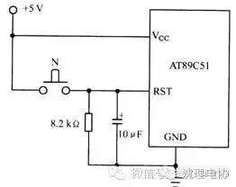
图1
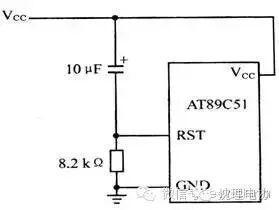
图2
2、上电复位
AT89C51的上电复位电路如图2所示，只要在RST复位输入引脚上接一电容至Vcc端，下接一个电阻到地即可。对于CMOS型单片机，由于在RST端内部有一个下拉电阻，故可将外部电阻去掉，而将外接电容减至1µF。上电复位的工作过程是在加电时，复位电路通过电 容加给RST端一个短暂的高电平信号，此高电平信号随着Vcc对电容的充电过程而逐渐回落，即RST端的高电平持续时间取决于电容的充电时间。为了保证系统能够可靠地复位，RST端的高电平信号必须维持足够长的时间。上电时，Vcc的上升时间约为10ms，而振荡器的起振时间取决于振荡频率，如晶振频率为10MHz，起振时间为1ms；晶振频率为1MHz，起振时间则为10ms。在图2的复位电路中，当Vcc掉电时，必然会使RST端电压迅速下降到0V以下，但是，由于内部电路的限制作用，这个负电压将不会对器件产生损害。另外，在复位期间，端口引脚处于随机状态，复位后，系统将端口置为全“l”态。如果系统在上电时得不到有效的复位，则程序计数器PC将得不到一个合适的初值，因此，CPU可能会从一个未被定义的位置开始执行程序。
2、积分型上电复位
常用的上电或开关复位电路如图3所示。上电后，由于电容C3的充电和反相门的作用，使RST持续一段时间的高电平。当单片机已在运行当中时，按下复位键K后松开，也能使RST为一段时间的高电平，从而实现上电或开关复位的操作。
根据实际操作的经验，下面给出这种复位电路的电容、电阻参考值。
图3中：C：＝1uF，Rl＝lk，R2＝10k
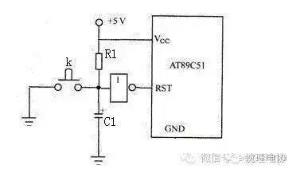
图3 积分型上电复位电路
专用芯片复位电路：
上电复位电路 在控制系统中的作用是启动单片机开始工作。但在电源上电以及在正常工作时电压异常或干扰时，电源会有一些不稳定的因素，为单片机工作的稳定性可能带来严重的影响。因此，在电源上电时延时输出给芯片输出一复位信号。上复位电路另一个作用是，监视正常工作时电源电压。若电源有异常则会进行强制复位。复位输出脚输出低电平需要持续三个(12/fc s)或者更多的指令周期，复位程序开始初始化芯片内部的初始状态。等待接受输入信号（若如遥控器的信号等）。
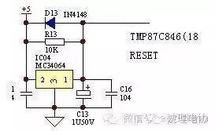
图4 上电复位电路原理图
上电复位电路原理分析
5V电源通过MC34064的2脚输入，1脚便可输出一个上升沿，触发芯片的复位脚。电解电容C13是调节复位延时时间的。当电源关断时，电解电容C13上的残留电荷通过D13和MC34064内部电路构成回路，释放掉电荷。以备下次复位启用。
四、上电复位电路的关键性器件
关键性器件有：MC34064 。
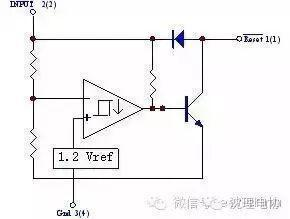
图6 内部结构框图
输入输出特性曲线：
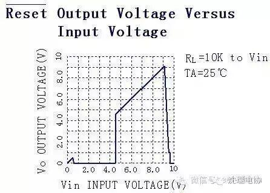
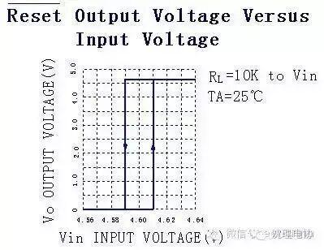
上电复位电路关键点电气参数
MC34064的输出脚1脚的输出(稳定之后的输出)如下图所示：
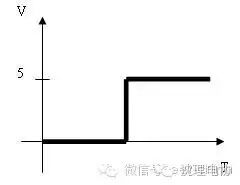
三极管欠压复位电路
欠压复位电路工作原理（图6）w 接通电源，＋5V电压从“0V”开始上升，在升至3.6V之前，稳压二极管DH03都处于截止状态，QH01(PNP管)也处于截止状态，无复位电压输出。w 当＋5V电源电压高于3.6V以后，稳压二极管DH03反向击穿，将其两端电压“箝位”于3.6V。当＋5V电源电压高于4.3V以后，QH01开始导通，复位电压开始形成，当＋5V电源电压接近＋5V时，QH01已经饱和导通，复位电压达到稳定状态。
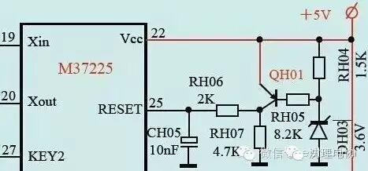
看门狗型复位电路
看门狗型复位电路主要利用CPU正常工作时,定时复位计数器,使得计数器的值不超过某一值;当CPU不能正常工作时,由于计数器不能被复位,因此其计数会超过某一值,从而产生复位脉冲,使得CPU恢复正常工作状态。典型应用的Watchdog复位电路如图7所示。此复位电路的可靠性主要取决于软件设计,即将定时向复位电路发出脉冲的程序放在何处。一般设计,将此段程序放在定时器中断服务子程序中。然而,有时这种设计仍然会引起程序走飞或工作不正常。原因主要是：当程序“走飞”发生时定时器初始化以及开中断之后的话,这种“走飞”情况就有可能不能由Watchdog复位电路校正回来。因为定时器中断一真在产生,即使程序不正常,Watchdog也能被正常复位。为此提出定时器加预设的设计方法。即在初始化时压入堆栈一个地址,在此地址内执行的是一条关中断和一条死循环语句。在所有不被程序代码占用的地址尽可能地用子程序返回指令RET代替。这样,当程序走飞后,其进入陷阱的可能性将大大增加。而一旦进入陷阱,定时器停止工作并且关闭中断,从而使Watchdog复位电路会产生一个复位脉冲将CPU复位。当然这种技术用于实时性较强的控制或处理软件中有一定的困难。
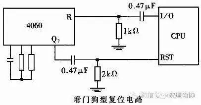
图7 看门狗型复位电路
比较器型复位电路
比较器型复位电路的基本原理如图8所示。上电复位时,由于组成了一个RC低通网络,所以比较器的正相输入端的电压比负相端输入电压延迟一定时间。而比较器的负相端网络的时间常数远远小于正相端RC网络的时间常数,因此在正端电压还没有超过负端电压时,比较器输出低电平,经反相器后产生高电平。复位脉冲的宽度主要取决于正常电压上升的速度。由于负端电压放电回路时间常数较大,因此对电源电压的波动不敏感。但是容易产生以下二种不利现象：（1）电源二次开关间隔太短时,复位不可靠;（2）当电源电压中有浪涌现象时,可能在浪涌消失后不能产生复位脉冲。为此,将改进比较器重定电路,如图9所示。这个改进电路可以消除第一种现象,并减少第二种现象的产生。为了彻底消除这二种现象,可以利用数字逻辑的方法与比较器配合,设计如图9所示的比较器重定电路。此电路稍加改进即可作为上电复位与看门狗复位电路共同复位的电路,大大提高了复位的可靠性。
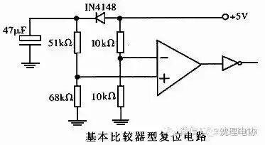
图8 比较器型复位电路
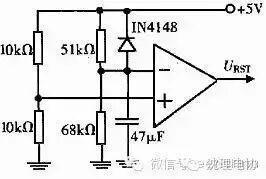
图9 改进型比较器型复位电路

信息部\张晋鹏